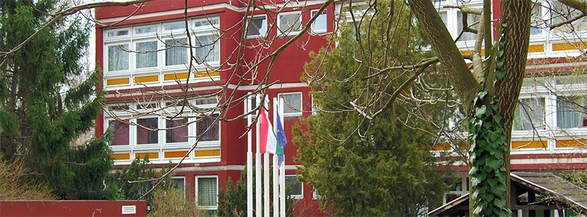

BMSZC Neumann János Informatikai Technikum
Eredmények közül párat felsorolunk a 2019-2020as tanévből:
| Verseny neve | Helyezések |
|---|---|
| Bolyai Matematika Csapatverseny: |
|
| ÁSZÉV |
|
| Dusza Árpád Programozói Verseny |
|
Körzeti fordulóban elért eredmények: |
Az információk a Neu verseny 2019-2020-ról származnak

- Cím: 1144 Budapest Kerepesi út 124
- Elérhető hévvel, gyalog, és a 80/81-es trolival
- Telephely kód: 007 (2023/2024)
- OM azonosító: 203058
- Telefon +36-70-502-1222
- E-mail: iskola@njszg.hu
- Iskola létrejötte: 1997
Az információk a njszki.hu-ról származnak, további információkért látogassanak el ide.